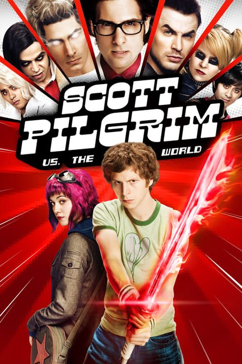
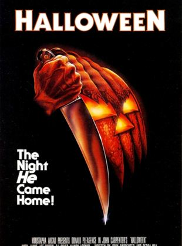

As Vantagens de ser Invisivel

Charlie (Logan Lerman) é um jovem que tem dificuldades para interagir em sua nova escola. Com os nervos à flor da pele, ele se sente deslocado no ambiente. Seu professor de literatura, no entanto, acredita nele e o vê como um gênio. Mas Charlie continua a pensar pouco de si... até o dia em que dois amigos, Patrick (Ezra Miller) e Sam (Emma Watson), passam a andar com ele.
TrailerScott Pilgrim Contra o Mundo
Scott Pilgrim (Michael Cera) tem 23 anos, integra uma banda de colégio, vive trocando de emprego e tem um namoro firme. Sua vida está maravilhosa, até conhecer Ramona V. Flowers (Mary Elizabeth Winestead). Ele logo se apaixona perdidamente por ela, só que não será fácil conquistar seu amor. Para tanto ele precisa enfrentar os sete ex-namorados dela, que estão dispostos a tudo para impedir sua felicidade com outra pessoa.
TrailerAdoraveis Mulheres
As irmãs Jo (Saoirse Ronan), Beth (Eliza Scanlen), Meg (Emma Watson) e Amy (Florence Pugh) amadurecem na virada da adolescência para a vida adulta enquanto os Estados Unidos atravessam a Guerra Civil. Com personalidades completamente diferentes, elas enfrentam os desafios de crescer unidas pelo amor que nutrem umas pelas outras.
TrailerHALLOWEEN - A NOITE DO TERROR
Michael Myers (Tony Moran) é um psicopata que vive em uma instituição há 15 anos, desde quando matou sua própria irmã. Porém, ele consegue fugir de seu cativeiro e retorna à sua cidade natal para continuar seus crimes na localidade que, aterrorizada, ainda se lembra dele.
Trailer